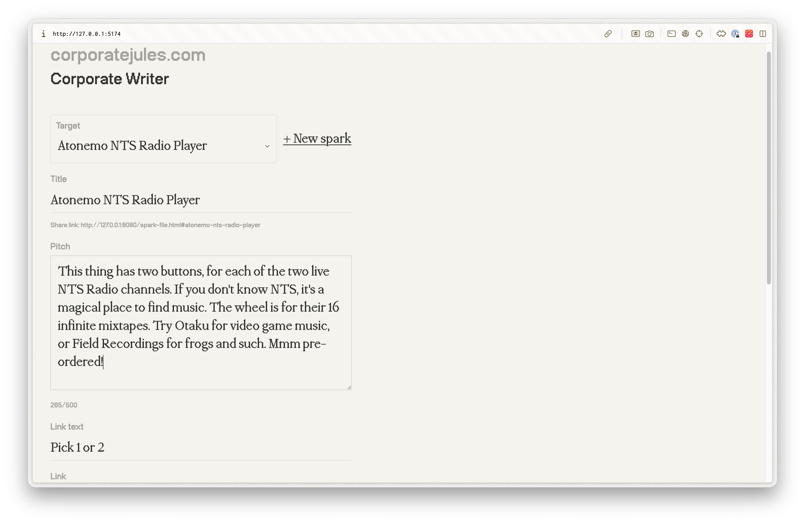

Jeg tar i mot en av mange baller du kastet i min retning, Teodor, og ser nærmere på følgende: "Hadde det ikke vært fint, Julian, om du fikk sett hvordan det så ut mens du skriver?".
Jo. Det er en av tingene jeg har lært om meg selv i skapende arbeid; at jeg er over gjennomsnittlig opptatt av å "se hvordan det ble". Det gjelder ikke bare skriving. Hvis jeg lager musikk vil jeg eksportere et utkast før jeg drar fra studio. Jeg vil heller ikke bare la det ligge på studio-pcen, men laste det opp til et avspillings-medium og høre på det på telefonen på vei hjem. Selv om det jeg har laget er helt uferdig og ikke noe bra, så går jeg helst inn i opplevelses-modus så fort som mulig. Later som jeg hører det for første gang, ser hvordan det ser ut ved siden av musikken jeg hører på til vanlig, konteksten gir det nytt lys. Tilbake til skrivinga; jeg vil vite hvordan det føles å lese teksten min. Og jeg er svært opptatt av detaljene. Informasjonsdesign-guruen, Edward Tufte, pekte på viktigheten av visuell formatering av et dikt. Mye av rytmen, for eksempel, oppleves for leseren som følge av linjeskift. En poet kunne aldri aksptert et verktøy som bestemte denne visuelle formateringen for han. Jeg er ikke en poet, og kan i større grad spille på lag med internettets begrensninger og formaterings-konvensjoner, men det er i hvert fall av slike grunner at mitt hjemmesnekra CMS viser samme font i editor som den formaterte teksten på nettsiden.

Denne iveren etter å gå inn i opplevelsesmodus er designeren og formidleren i meg. Jeg tester mitt eget produkt konstant. Kommuniserer dette slik jeg ønsker? Og det er slik jeg itererer, spikker på trefiguren til jeg er fornøyd. For meg er dette arbeidet kanskje det morsomste, og det jeg føler jeg er best på. Da kan man forstå hvorfor møtet med "internettets materialer" kan føles som en hindring.
Jeg føler ikke for å gå inn i skammen over å ha brukt AI til å lage et CMS, som jeg følgelig ikke vet hvordan fungerer. Men jeg mener det når jeg skriver at jeg ønsker å forstå mer av "internettets materialer" i parallell med denne ukritiske utforskningen. Derfor er det godt å ha slike forum som dette, og en læremester som deg, Teodor.
Etter å ha lest teksten din mange ganger, i søken etter en innfallsvinkel, oppdaget jeg noe rart. Skjermbildet du hadde lagt til at prototypen din var ikke et skjermbilde i det hele tatt, men et interaktivt HTML-element. Jeg ser frem til å prøve ut det du bygger, og er spent på hvor dypt dette kaninhullet blir før vi finner veien tilbake til makro-perspektivene. Om vi noen sinne gjør det. Jeg slipper henda på rattet, og nyter brisen i håret. Plutselig fant vi noe helt annet enn det vi lette etter.